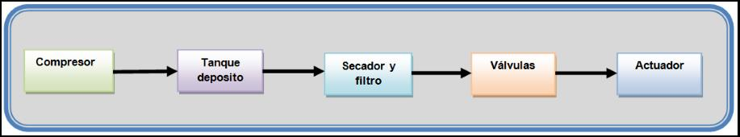
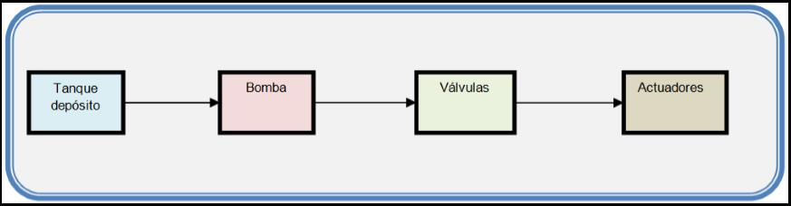

Los sistemas neumáticos son sistemas que utilizan el aire u otro gas
como medio para la transmisión de señales y/o potencia. Dentro del campo de la neumática la
tecnología se ocupa, sobre todo, de la aplicación del aire comprimido en la automatización
industrial (ensamblado, empaquetado, etc.
Los sistemas neumáticos se usan mucho en la automatización de máquinas y en el campo de los
controladores automáticos. Los circuitos neumáticos que convierten la energía del aire
comprimido en energía mecánica tienen un amplio campo de aplicación (martillos y herramientas
neumáticas, dedos de robots, etc.) por la velocidad de reacción de los actuadores y por no
necesitar un circuito de retorno del aire.
En los sistemas neumáticos, el movimiento del émbolo de los cilindros de los actuadores es más
rápido que en los mecanismos hidráulicos. (Por ejemplo, el taladro y el martillo neumático,
responden muy bien a las exigencias requeridas en estos casos).
Un circuito neumático básico puede representarse mediante el siguiente diagrama funcional.
Ejemplo 
Los fluidos, ya sean líquidos o gases son importantes medios para
transmitir señales y/o potencias, y tienen un amplio campo de aplicación en las estructuras
productivas. Los sistemas en el que el fluido puesto en juego es un líquido se llaman sistemas
hidráulicos. El líquido puede ser, agua, aceites, o substancias no oxidantes y lubricantes, para
evitar problemas de oxidación y facilitar el desplazamiento de las piezas en movimiento.
Los sistemas hidráulicos tienen un amplio campo de aplicación, podemos mencionar, además de la
prensa hidráulica, el sistema hidráulico de accionamiento de los frenos, elevadores
hidráulicos, el gato hidráulico, los comandos de máquinas herramientas o de los sistemas
mecánicos de los aviones, etc., en estos casos el líquido es aceite. Estos mecanismos constan
de una bomba con pistón de diámetro relativamente pequeño, que al trabajar genera una presión en
el líquido, la que al actuar sobre un pistón de diámetro mucho mayor produce una fuerza mayor
que la aplicada al pistón chico, y que es la fuerza utilizable.
Los circuitos hidráulicos básicos están formados por cuatro componentes: un depósito para
guardar el fluido hidráulico, una bomba para forzar el fluido a través del circuito, válvulas
para controlar la presión del fluido y su flujo, y uno o más actuadores que convierten la
energía hidráulica en mecánica. Los actuadores realizan la función opuesta a la de las bombas.
El depósito, la bomba, las válvulas de control y los actuado-res son dispositivos mecánicos.
Ejemplo